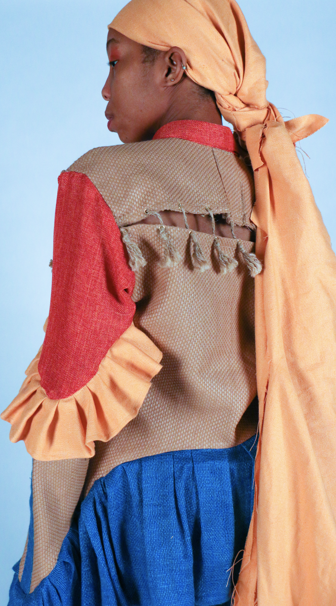
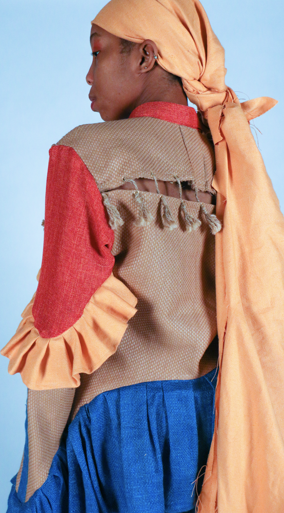

“Submerged: Look 1: Warrior”
Creative Shirt and sleeve bag designed and styled by Leyza | Photography shot and edited by Natalie
This peice was inspired by a dance performance of a woman underwater, to portray the idea of water in relation to clothing. The purpose was to embrace uncertainty and portray its densities in different types of linen, a fabric that has both that dense yet airy feeling.

 
